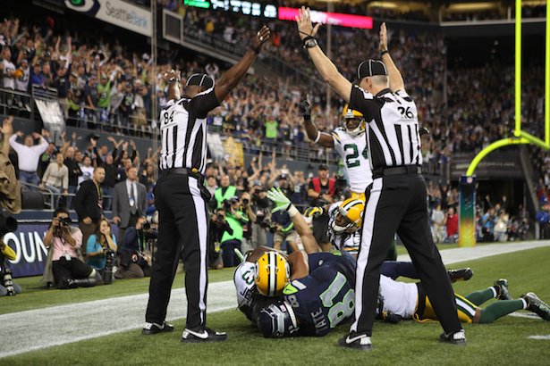

Russell Carrington Wilson (born November 29, 1988) is an American football quarterback for the Seattle Seahawks of the National Football League (NFL). Wilson initially played football and baseball for North Carolina State University from 2008 to 2010 before transferring to Wisconsin. He played college football for the University of Wisconsin during the 2011 season, in which he set the single-season FBS record for passing efficiency (191.8) and led the team to a Big Ten title and the 2012 Rose Bowl. He also played minor league baseball for the Tri-City Dust Devils in 2010 and the Asheville Tourists in 2011 as a second baseman, and as of 2019 his professional baseball rights are held by the Somerset Patriots, the Double-A affiliate of the New York Yankees. He was selected by the Seahawks in the third round (75th overall) of the 2012 NFL Draft. After beating out Matt Flynn for the starting job during training camp, Wilson ended up having a successful debut season, tying Peyton Manning's then-record for most passing touchdowns by a rookie (26) and was named Pepsi NFL Rookie of the Year. Wilson has been named to eight Pro Bowls and has started in two Super Bowls, winning Super Bowl XLVIII over the Denver Broncos. He holds the record for most wins by an NFL quarterback through nine seasons (98) and is one of four quarterbacks in NFL history with a career passer rating over 100. In April 2019 Wilson signed a four-year, $140 million contract extension with the Seahawks, making him the highest paid player in the NFL at the time. In 2020 he became just the third quarterback in NFL history to throw for 30 touchdowns in four consecutive seasons. He was named the Walter Payton NFL Man of the Year for the 2020 season. Wilson is also a part owner of the Seattle Sounders of Major League Soccer.(Wikipedia)